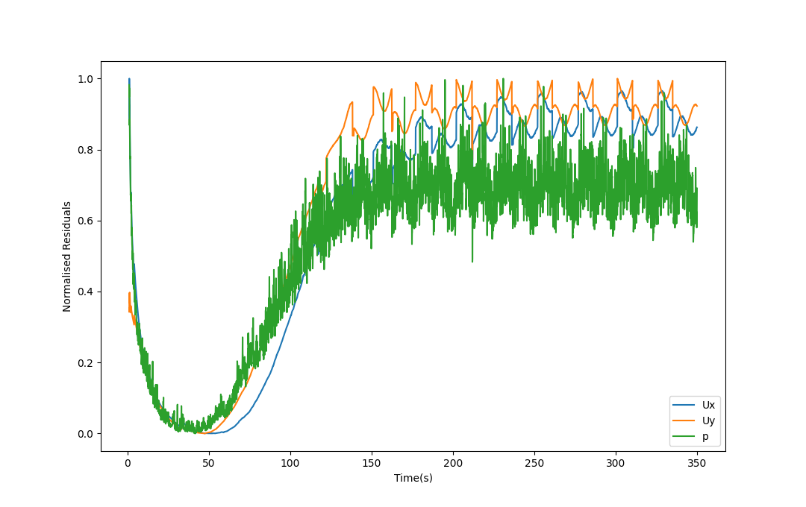

Description: 2D flow past a circular cylinder in the L3 (laminar vortex shedding) regime
Reference Paper: Numerical Study and Phycial Analysis of the pressure and velocity field near wake of a circular cylinder
Model
The model consists of a rectangular domain of length 50m and height 40m.
The z-direction (empty) width was taken to be 1m.
The cylinder is at 20m from the inlet boundary and in the middle of bottom and top boundaries.
The kinematic viscosity ($\nu$) was set to 0.01.
The reference density used for the force-coefficients calculations ($C_d$ & $C_l$) was 1.
Meshing
Meshing was done using Gmsh.
The resulting mesh had 11308 points and 11064 prism cells.
The mesh was refined near the cylinder surface to accurately capture the drag and lift effects at the cylinder wall.
The mesh along with the patch names can be viewed in the figure below.
The generated mesh (with extension .msh) was used in OpenFOAM using the gmshToFoam utility and the patch types were changed in ./constant/polyMesh/boundary file.
Physics
The 2D incompressible Navier-Stokes equations were solved in OpenFOAM for a laminar flow case since for the simulation, Re = 100.
The Mass conservation equation is given by
$$ \frac{\partial u}{\partial x} + \frac{\partial v}{\partial y} = 0$$
The transient 2D incompressible momentum conservation equations in x & y directions are
$$ y: \frac{\partial v}{\partial t} + u\frac{\partial v}{\partial x} + v\frac{\partial v}{\partial y} = -\frac{1}{\rho}\frac{\partial P}{\partial y} + \nu\left(\frac{\partial ^2 v}{\partial ^2 x} + \frac{\partial ^2 v}{\partial ^2 y} \right)$$
Simulation
The case was simulated using OpenFOAM.
The inlet flow velocity was set to 0.5 m/s (corresponding to Re = 100) in the streamwise direction (x) and the internal flow field was initialized with the same velocity
Boundary Conditions
| Parameter | Inlet | Outlet | bottom | top | cylinder |
|---|---|---|---|---|---|
| Velocity | uniform (0 0 0.5) | zeroGradient | symmetry | symmetry | noSlip |
| Pressure | zeroGradient | uniform 0 | symmetry | symmetry | zeroGradient |
The transient simulation was run for 350 s with a $\Delta T$ of 0.0001 using the PIMPLE (PISO/SIMPLE) algorithm.
The PISO algorithm with 3 Non-orthogonal correctors and 2 correctors was used.
A plot of normalised residuals is shown below

From the residual plot, it can be seen that the residuals start oscillating and the solution can be said to be sufficiently converged since the residuals don't decrease anymore
Validation
Results were validated against the aforementioned reference paper.
Drag ($C_d$) and Lift ($C_l$) coefficients were monitored during the simulations as a measure for convergence.
A plot of these coefficients for the simulation time is shown below.
From the plot, it can be observed that the system exhibits a steady oscillating pattern after the initial unsteadiness from about 200s.
Time range of 250-350s was selected for computing the average values for the coefficients to validate against the reference.
The mean drag coefficient ($\overline C_d$) was calculated for the above time range and the root mean squared value of the lift coefficient ($C_{l,rms}$) was also calculated and these values are given in the table below along with the reference values.
| Coefficient | Simulation | Reference |
|---|---|---|
| $C_d$ | 1.3756 | $1.386 \pm 0.015$ |
| $C_l$ | 0.231 | 0.25 |
From the above table, it can be inferred that the simulation is successfully validated and the von Karmann vortex street can be observed behind the cylinder.
Back to Database